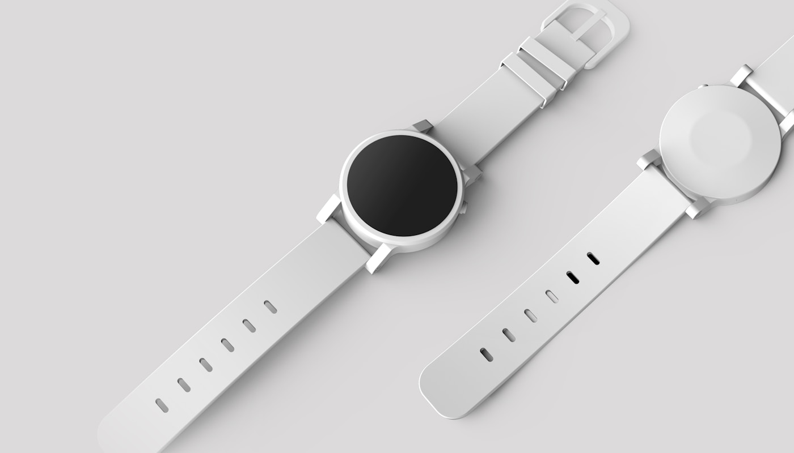

02 / Watch Design
Small details.
Big character.
A closer look at the lines, materials, and proportions that turn an instrument into an expression.

The journal
Character by design
Two watches can tell the same time and still have completely different personalities. The shape of the case, the color of the dial, and the style of the strap all help create that first impression.
The dial is the face of the watch, while the case holds and protects the movement inside. Hour markers and hands make an analog display readable. Even a small change, like replacing a leather strap with a metal bracelet, can make a familiar watch feel different.
I usually lean toward a clean dial with just a few interesting details. A watch does not need to be flashy to stand out; sometimes a nice texture or a well-chosen color is the part I notice most.